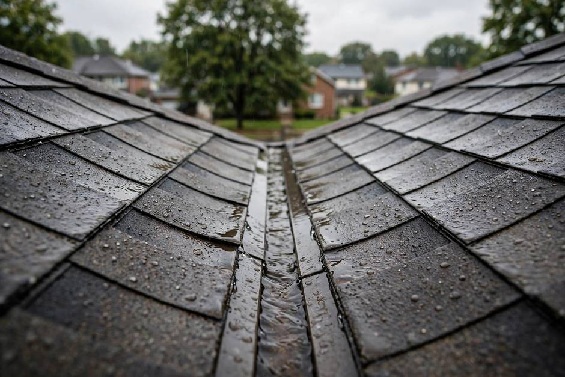
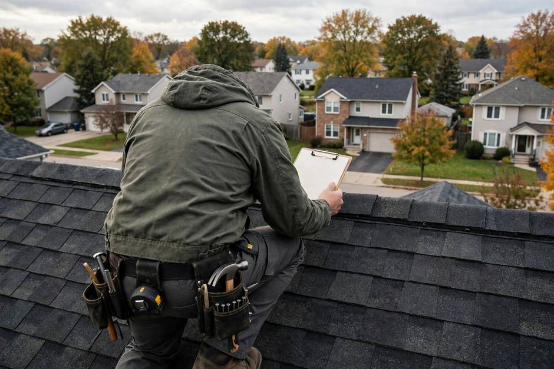
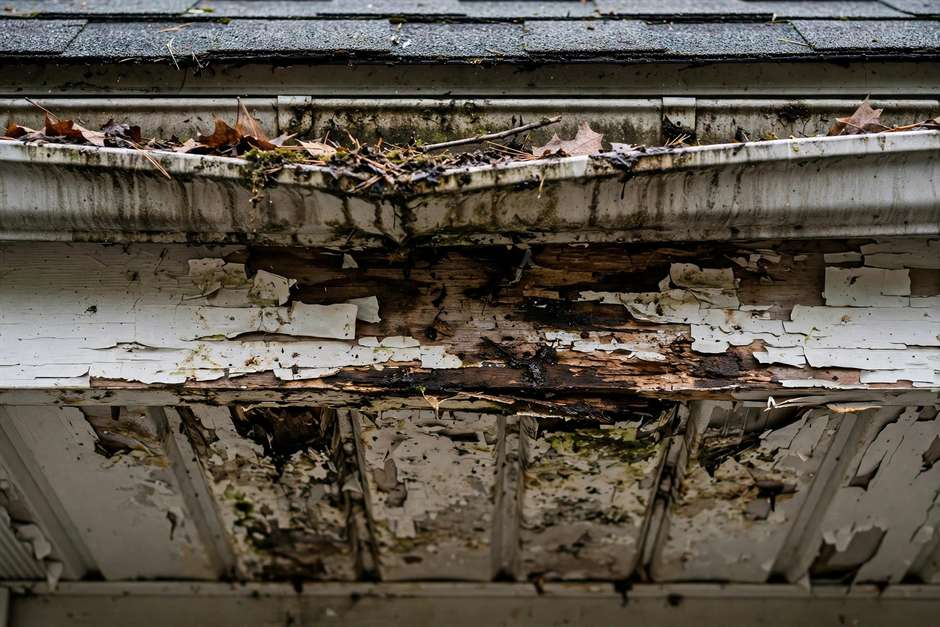
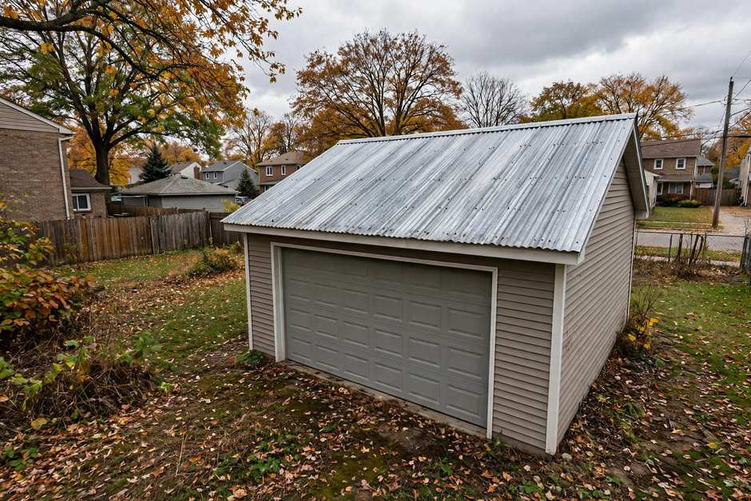

Widespread granule loss and curling shingles
When granule loss, curling, or cracking shows across several slopes, spot repairs stop making sense. A roof inspection documents how far the wear goes before replacement is discussed.
Roof replacement in Des Plaines, IL means removing the old covering down to the deck and installing a new roof system: underlayment, ice barrier, flashing, and a finished covering. Most Des Plaines homes date from the mid-twentieth century, so a replacement often follows one or more earlier roofs. Call (224) 802-4866 during office hours to talk about what your roof needs.
Tell us what is happening with your roof. Office hours: Mon–Tue 7:30 AM–7:00 PM, Wed–Fri 7:30 AM–7:30 PM, Sat 8:30 AM–5:00 PM, Sun closed.
Call (224) 802-4866 → Phone is the only contact channel.
A roof replacement removes the existing covering down to the roof deck, so the decking, flashing, and ventilation can be looked at before anything new goes on. A new roof installation on an existing home usually means this same tear-off-and-replace scope, rather than laying a new covering over the old one. Where two or more layers already exist, the City's Roof Guide calls for tear-off, and no more than two layers may remain when the work is finished.
Des Plaines housing is older than many suburbs: the U.S. Census Bureau's American Community Survey (2019–2023) puts the median year built at 1966, with 70.6% of homes built before 1980. That means many roofs are on a second or third covering, with earlier layers and varied decking as possible findings — never a fact about any one house until it is looked at. Winter adds its own test: Chicago O'Hare normals for 1991–2020 record 38.4 inches of snowfall a year, with about 121 nights at or below freezing. Homes around Cumberland and downtown Des Plaines show the same mid-century pattern in different forms, from postwar ranches to downtown mixed stock. A roof inspection documents the condition of the deck and covering before replacement is decided, and a roof repair is the right conversation where damage is limited.
A replacement is a system, not just a covering. The parts below describe the scope generally; what your roof needs depends on its decking, layers, flashing, and ventilation. Permit requirements vary — ask the City of Des Plaines Building Division before work starts. The City's Roof Guide describes a 25%-in-12-months permit position that is being confirmed, and the Guide calls for a final inspection.
Old covering comes off down to the sheathing so the deck can be checked for rot and soft spots. Tear-off is required where two or more layers exist, where the base is water-soaked or deteriorated, or over a shake, slate, or tile base, and the finished roof may carry no more than two layers, per the City Roof Guide and the adopted code summaries.
Ice-barrier underlayment is required under the City's adopted code table. The City Roof Guide describes self-adhesive shield at all gutter edges, at least 24 inches, and at all valleys; summaries of the model code describe 24 inches inside the exterior wall line, and 36 inches on slopes of 8:12 or steeper. The two wordings are stated as written, and the inspector's interpretation controls.
Underlayment covers the field between the deck and the finished covering. The City Roof Guide sets pitch limits for coverings — tab shingles not below 2:12 and roll roofing not below 1:12 — which is part of why low-slope sections use membranes instead of shingles. See flat roof repair for low-slope sections.
Step flashing at walls and chimneys, drip edge, pipe boots, and valley metal are renewed as part of a replacement, since flashing left in place is a common source of later leaks. Chimney flashing work covers the metal at the roof junction; masonry repair is a separate trade.
Intake and exhaust ventilation are part of the roof assembly, and a replacement is the natural point to look at them. Blocked soffit vents, mixed vent types, and thin original insulation recur on mid-century homes across Chicagoland. Ventilation detail lives on the attic ventilation page.
Architectural asphalt is the common choice; metal and wood shake are alternatives with different profiles. Third-party guides commonly put architectural asphalt at 20–30 years and metal at 40–70 years — guide figures, not promises. Compare metal roofing and wood shake roofing before deciding. Guide cost ranges appear in the questions below.
The roof surface, flashing, and accessible attic are looked at, and the roof is measured. The scope — tear-off, decking, flashing, ventilation, material — is discussed, along with permit questions for the Building Division. Nothing is assumed about layers or decking until they are seen.
Old layers come off to the deck, and the sheathing is checked. Decking that is soft or deteriorated is cut out and replaced before the new system goes on. This is also when earlier layers, added insulation, and dormer or addition junctions become visible.
Self-adhesive ice barrier goes at eaves and valleys, underlayment covers the field, and flashing is renewed at walls, chimneys, valleys, and penetrations. Drip edge and pipe boots are renewed with the flashing.
The finished covering is installed over the prepared deck, with ridge and intake ventilation addressed as part of the assembly. Where a skylight curb or flashing is part of the roof, its condition is checked during the same work; see skylight installation.
The City's Roof Guide calls for a final inspection. The finished slopes, flashing details, and ventilation are reviewed with you, and the site is left cleared of roofing debris. Ask what paperwork and product information come with the finished roof.
Ordinary roofing equipment, used for the task each one suits. Methods vary with pitch, material, and what the deck reveals.
Sets shingle nails to a consistent depth and pattern across the field. Depth and placement follow the shingle maker's instructions for the product being installed.
Cuts shingles at valleys and ridges and strips old layers off the deck. Pry bars lift old covering and nails with less damage to the sheathing underneath.
Keeps courses straight and starter rows aligned, which shows on the long slopes facing the street.
Stabilizers keep ladders off gutters, and fall protection is used on steep-slope work. Roof work on wet or icy surfaces is a safety risk and is not rushed.
Picks up stray roofing nails from the lawn and driveway after tear-off and installation.
Landscaping and walkways are covered during tear-off so old shingles and debris stay off plantings and out of gutters.
A second covering was laid over the first at some earlier point, hiding the deck and the original flashing. Granule loss and curling show on the surface, while the condition of the deck stays unknown.
Tear-off is required at two or more layers, with a maximum of two layers on completion. Ask how the deck will be checked once the old covering is off, and what happens if decking needs replacing.
Snow melts higher on the roof, refreezes at the colder eave, and backs water under the covering. Stains near exterior walls after a thaw point to this pattern.
Ice barrier at eaves and valleys is required, and ventilation and insulation are part of the same picture. Ask how the replacement addresses the eave detail and the attic conditions behind it — see attic ventilation.
Architectural asphalt, metal, and wood shake each suit different budgets, pitches, and looks. Guides give wide lifespan ranges, and no figure is a promise about any one roof.
Ask how each material handles Des Plaines freeze–thaw cycles and snow load on your pitch, and what maintenance each one asks of you. Start with the metal roofing and wood shake pages.
A replacement is the answer when the covering, flashing, or decking has failed across much of the roof — not when one detail has. The problems below are the ones that most often lead to a replacement conversation.
Ask a pro →When granule loss, curling, or cracking shows across several slopes, spot repairs stop making sense. A roof inspection documents how far the wear goes before replacement is discussed.
Step flashing at walls and chimneys, valley metal, and pipe boots wear out on their own schedule. A replacement renews them all at once; where the covering is otherwise sound, a roof repair may address the flashing alone.
Ice barrier at eaves and valleys is part of a replacement, and ventilation is reviewed with it. Prevention also involves insulation and air sealing, which are separate trades — the ventilation page explains the boundary.
Hail bruising and wind uplift spread across a roof are documented slope by slope. Where the damage is storm-related, see storm damage roof repair for documentation guidance, and emergency roof repair where a breach needs temporary protection.
“I use WP Exteriors to repaint my roof and do as some tuckpointing on the exterior of my building. Pat and his team were very professional and communicative. They did a good job explaining what needs to be done to my home immediately and what I can plan for in the future. I will definitely be using them in the future.”
Patricia MurrayGoogle review · 2 months ago
“I recently had the pleasure of working with WP Exterior for my roofing needs, and I must say, I couldn't be more satisfied with the outcome. From the moment I contacted them, it was evident that they truly value their customers. …”
Filip LiberaGoogle review · 2 years ago · Verbatim excerpt
“Patryk was great to work with and extremely professional. I highly recommend WP exteriors and plan on using them again in the future!”
Brian Avila GaonaGoogle review · 5 months ago · Roof inspection
These are third-party guide ranges, not WP Exterior Inc prices, and no Des Plaines-specific pricing was found in the guides reviewed. Angi's Chicago guide (updated July 9, 2026) puts most asphalt shingle replacements at $6,049–$14,515, averaging $10,185. Modernize's Illinois guide (updated August 27, 2026) puts architectural asphalt for a 1,800–2,200-square-foot home at $9,500–$23,000, averaging $15,200. The ranges differ because guides measure different roof sizes and scopes. Your cost depends on roof size, pitch, layers to remove, decking condition, and material, so ask for a written estimate based on your roof.
That depends on the size and pitch of the roof, how many layers must come off, the condition of the decking underneath, and the weather. A tear-off can reveal decking that needs attention before the new covering goes on, which changes the schedule. Ask about scheduling for your roof when you call, and expect the plan to be confirmed after the roof has been looked at.
Permit requirements vary, so ask the City of Des Plaines Building Division before work starts. The City's Roof Guide describes a position where roofing work covering 25% or more of the roof in a 12-month period requires a permit, and that position is being confirmed with the Building Division. The Guide also calls for a final inspection. Ice-barrier underlayment is required under the adopted code, and tear-off is required where two or more layers already exist, with a maximum of two layers when the work is finished.
That depends on how widespread the damage is and the condition of the rest of the covering and decking. Where damage is limited to one slope and the remaining covering is in sound condition, a partial replacement is sometimes discussed. Where wear, granule loss, or flashing failure shows across several slopes, a full replacement is often the more straightforward answer. A roof inspection can document the condition of each slope so the choice rests on what is actually there.
 Skylight InstallationSkylight replacement, leak repair, and reflashing, including the curb and flashing details that matter at re-roofing time.Explore →
Skylight InstallationSkylight replacement, leak repair, and reflashing, including the curb and flashing details that matter at re-roofing time.Explore →
Roof RepairLeaks, missing shingles, flashing, pipe boots, and valleys — and an honest repair-or-replace conversation where the damage is limited.Explore →
Roof InspectionSurface, flashing, valleys, penetrations, ridge, gutters, and accessible attic conditions, with photos and written findings.Explore →
Gutter InstallationGutters, downspouts, fascia, and soffit as part of the roofline — drainage and ventilation intake, assessed with the roof.Explore → Emergency Roof RepairTemporary protection for a breached or leaking roof, and safety steps while a permanent repair is planned. Call during office hours.Explore →
Emergency Roof RepairTemporary protection for a breached or leaking roof, and safety steps while a permanent repair is planned. Call during office hours.Explore → Storm Damage Roof RepairHail and wind damage on one page: how damage shows, how to document it, and the lawful shape of the insurance process.Explore →
Storm Damage Roof RepairHail and wind damage on one page: how damage shows, how to document it, and the lawful shape of the insurance process.Explore →
Metal RoofingStanding seam and other metal profiles for Des Plaines homes, with climate fit and guide lifespan figures explained.Explore → Wood Shake RoofingCedar shake replacement and repair, maintenance reality in Illinois humidity, and composite alternatives compared.Explore →
Wood Shake RoofingCedar shake replacement and repair, maintenance reality in Illinois humidity, and composite alternatives compared.Explore →Call (224) 802-4866 during office hours and describe what your roof is doing. We will talk through what a visit looks at, what the options are, and what questions to ask the Building Division about permits.
Call (224) 802-4866 →Call (224) 802-4866 during office hours to talk about your roof. Tell us what you are seeing — a stain, a missing shingle, damage after a storm — and we will talk through what a visit would look at. Office hours: Monday and Tuesday 7:30 AM–7:00 PM, Wednesday through Friday 7:30 AM–7:30 PM, Saturday 8:30 AM–5:00 PM, Sunday closed.